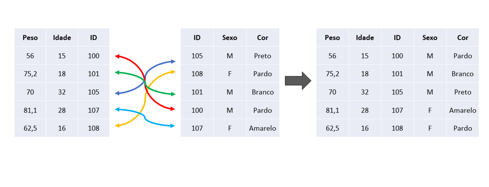
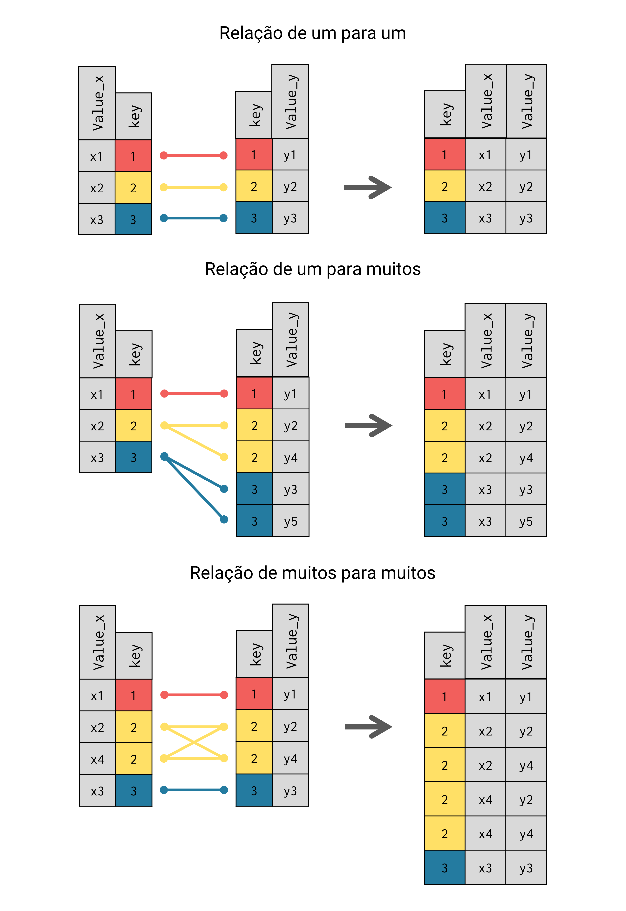

cores_de_pele# A tibble: 4 × 2
ID Cor
<dbl> <chr>
1 100 Pardo
2 102 Branco
3 104 Branco
4 105 AmareloQuando estamos construindo uma nova tabela de dados, é muito comum compararmos os nossos resultados com tabelas anteriores e nos depararmos com problemas de divergência nos dados. Isto é, situações como:
Uhmm… a tabela antiga indica que o número de maquininhas vendidas no mês de Dezembro foi de 1387. Porém, esse mesmo indicador na tabela nova está em 1824 para o mesmo mês de Dezembro. Porque esse aumento?
Aumentos desse tipo podem ocorrer por uma variedade de razões. Porém, operações de JOIN tem sido uma razão específica que tenho enfrentado com muita frequência em meu trabalho. Em outras palavras, JOINs são fontes extremamente comuns de dados duplicados. Como resultado, esses dados duplicados acabam gerando um “efeito expansivo” sobre os seus indicadores e suas tabelas.
Muitos analistas não compreendem o porquê, ou não enxergam como isso pode ocorrer. Nesse post, busco justamente esclarecer como uma operação de JOIN pode causar esse “efeito expansivo” em seus dados. Eu também explico esse efeito em detalhes no capítulo 6 do meu livro introdutório da linguagem R. Mais especificamente, a partir da seção Relações entre keys: primary keys são menos comuns do que você pensa. Portanto, grande parte do conhecimento exposto aqui são referências diretas ao livro.
Por opção minha, vou utilizar exemplos na linguagem R para demonstrar esse “efeito expansivo” de JOINs. Mas você poderia facilmente transpor todos esses exemplos para qualquer outra linguagem de sua preferência (e.g. como o Python).
Ou seja, o conhecimento exposto aqui independe da linguagem utilizada. Pois o efeito descrito aqui é uma característica intrínseca ao processo de JOIN, e não da linguagem utilizada.
Para demonstrar esse efeito expansivo, vou utilizar as tabelas cores_de_pele e alturas como exemplo. Podemos visualizar os dados dessas duas tabelas abaixo:
cores_de_pele# A tibble: 4 × 2
ID Cor
<dbl> <chr>
1 100 Pardo
2 102 Branco
3 104 Branco
4 105 Amareloalturas# A tibble: 4 × 3
DataRegistro ID Altura
<date> <dbl> <dbl>
1 2022-01-10 102 1.58
2 2022-01-10 105 1.72
3 2022-06-12 105 1.74
4 2022-08-24 105 1.75Vamos supor que, no início, você precisava manter um indicador de “número de usuários por cor de pele” em um relatório. Para isso, você simplesmente contava o número de linhas na tabela cores_de_pele agrupado pelos valores da coluna Cor. Como demonstrado abaixo:
library(dplyr)
usuarios_por_cor <- cores_de_pele |>
group_by(Cor) |>
summarise(N_usuarios = n())
usuarios_por_cor# A tibble: 3 × 2
Cor N_usuarios
<chr> <int>
1 Amarelo 1
2 Branco 2
3 Pardo 1Porém, uma nova necessidade surge no time. Agora, você precisa calcular também a “altura média por cor de pele”. Você sabe que as alturas dos usuários estão armazenadas na tabela alturas, contudo, você precisa trazer essas alturas para dentro da tabela cores_de_pele, para que você possa de fato calcular a altura média para cada cor de pele.
Portanto, você precisa realizar um JOIN entre essas tabelas, e é isso que estamos fazendo no código abaixo:
dados <- cores_de_pele |>
left_join(alturas, by = "ID")Agora, temos uma nova tabela chamada dados que contém todos os dados que precisamos para calcular ambos os indicadores (“número de usuários” e “altura média”) para cada cor de pele. Entretanto, quando calculamos esses indicadores com essa tabela dados, perceba que o número de usuários (indicador N_usuarios) de cor “Amarelo” sofreu um aumento repentino.
indicadores <- dados |>
group_by(Cor) |>
summarise(
N_usuarios = n(),
Altura_media = mean(Altura, na.rm = TRUE)
)
indicadores# A tibble: 3 × 3
Cor N_usuarios Altura_media
<chr> <int> <dbl>
1 Amarelo 3 1.74
2 Branco 2 1.58
3 Pardo 1 NaN Repare que nós não mudamos a fórmula de cálculo do indicador N_usuarios. Nós aplicamos a mesma função n() que utilizamos anteriormente. Nós também agrupamos a tabela dados pela coluna Cor com group_by(), da mesma forma que fizemos anteriormente. Porque esse aumento ocorreu?
Nós não mudamos nada na fórmula de cálculo do indicador N_usuarios. Porém, nós introduzimos um novo item na cadeia de transformações da tabela. Mais especificamente, um LEFT JOIN realizado pela função left_join(). Ou seja, o JOIN é o que mudou nesse código, e ele é o culpado por esse estranho e repentino aumento no número de usuários de cor “Amarelo”.
Se olharmos bem para a tabela resultado do JOIN (tabela dados) podemos começar a compreender o que aconteceu. Perceba que temos 6 linhas nessa tabela, isto é, temos 2 linhas a mais que a tabela cores_de_pele (que possui 4 linhas). Perceba também que temos 3 linhas nessa tabela descrevendo o mesmo usuário de ID 105. Ou seja, temos dados duplicados para esse usuário.
dados# A tibble: 6 × 4
ID Cor DataRegistro Altura
<dbl> <chr> <date> <dbl>
1 100 Pardo NA NA
2 102 Branco 2022-01-10 1.58
3 104 Branco NA NA
4 105 Amarelo 2022-01-10 1.72
5 105 Amarelo 2022-06-12 1.74
6 105 Amarelo 2022-08-24 1.75O usuário de ID 105 é o único usuário de cor “Amarelo” na tabela. Portanto, essas 3 linhas referentes ao ID 105 são a causa da mudança repentina no indicador N_usuarios para a cor “Amarelo”. Porém, como podemos ver abaixo, a tabela cores_de_pele tem 1 única linha para o usuário de ID 105. Como essa única linha se transformou em três?
cores_de_pele# A tibble: 4 × 2
ID Cor
<dbl> <chr>
1 100 Pardo
2 102 Branco
3 104 Branco
4 105 AmareloA única linha de ID 105 na tabela cores_de_pele se transformou em 3 linhas devido ao processo de pareamento dos dados realizado pelo JOIN. Todo JOIN, independe do tipo que ele seja (left, inner, right, full), vai sempre realizar um processo de pareamento entre os dados das duas tabelas, utilizando as colunas que representam as “chaves” do JOIN (Faria 2022).
Podemos visualizar esse processo de pareamento dos dados em Figure 1. Perceba que, tanto no exemplo dessa imagem, quanto no exemplo desse post, as chaves do JOIN são representadas pela coluna ID. Logo, o JOIN vai puxar os dados de uma tabela para a outra, utilizando os valores dessa coluna como guia.

No exemplo de Figure 1, ambas as tabelas que estão sendo unidas possuem uma linha para cada ID. Ou seja, não existe IDs duplicados em nenhuma das duas tabelas, formando assim, uma relação de “um para um” entre as chaves do JOIN.
Contudo, no exemplo deste post, a tabela alturas possui três linhas diferentes para o mesmo ID 105, enquanto a tabela cores_de_pele não apresenta IDs duplicados. Isso acaba formando uma relação de “um para muitos” entre as chaves do JOIN. Nesse caso, como o processo de pareamento do JOIN deve se comportar? Bem, o seguinte vai acontecer…
O JOIN vai pegar o ID 105 da tabela cores_de_pele e pesquisar por ele ao longo da tabela alturas. Como resultado, o JOIN vai localizar três linhas distintas para o ID 105 na tabela alturas.
O JOIN percebe que há um desequilíbrio (1 linha de cores_de_pele \(\times\) 3 linhas de alturas).
Para reequilibrar essa balança, o JOIN vai executar um produto cartesiano entre as linhas dessas duas tabelas.
A Figure 2 apresenta de forma visual essa conexão:

Ou seja, o JOIN vai retornar como resultado, todas as combinações possíveis entre a linha única de cores_de_pele e as 3 linhas de alturas. Ou seja, a linha única de cores_de_pele é combinada com cada uma das 3 linhas de alturas. Como resultado, temos as 3 linhas de ID 105 na tabela dados:
dados# A tibble: 6 × 4
ID Cor DataRegistro Altura
<dbl> <chr> <date> <dbl>
1 100 Pardo NA NA
2 102 Branco 2022-01-10 1.58
3 104 Branco NA NA
4 105 Amarelo 2022-01-10 1.72
5 105 Amarelo 2022-06-12 1.74
6 105 Amarelo 2022-08-24 1.75Portanto, o produto cartesiano executado pelo JOIN gerou linhas duplicadas para o ID 105, e essa introdução de dados duplicados acabou distorcendo o valor dos indicadores. O efeito expansivo está no produto cartesiano gerado pelo JOIN, e você deve ficar atento em todas as situações em que esse produto pode ocorrer.
Mas então… em que momentos especificamente esse produto cartesiano é gerado? A resposta é: sempre que existir uma relação de “um para muitos” ou de “muitos para muitos” entre as chaves do JOIN. As “chaves” (ou keys) de todo JOIN podem formar três tipos de relação: 1) um para um; 2) um para muitos; e 3) muitos para muitos (Faria 2022). Em Figure 3 apresentamos de forma visual essas relações, e os produtos cartesianos que elas geram, onde a coluna key representa a “chave” do JOIN.

Perceba que, para o caso de relação um para um, o número de linhas na tabela resultado permanece inalterado. Porém, as relações que realmente nos interessam nesse post são as relações de “um para muitos” e de “muitos para muitos”. Perceba que um produto cartesiano ocorre nesses dois tipos de relação, e, como resultado, algum nível de “duplicação” de informações é gerado na tabela resultado do JOIN.
É através dessa “duplicação” que pode ocorrer o que estamos chamando de “efeito expansivo” dos JOINs nesse post. Perceba em Figure 3 que o “efeito expansivo” e, consequentemente, a distorção sobre os seus indicadores pode ser ainda maior no caso de relações “muitos para muitos”. Pois o produto cartesiano gerado por esse tipo de relação resulta em um número maior de linhas duplicadas.
É provável que as “chaves” do seu JOIN apresentem ao menos alguns valores (ou IDs específicos) que possuem uma relação de “um para um”. Logo, esses valores específicos não vão causar esse efeito expansivo em seu JOIN. O ID 102 da tabela cores_de_pele é um exemplo de ID que também está presente na tabela alturas, e que ocupa uma única linha dessa tabela. Logo, esse ID específico forma uma relação de “um para um” entre as tabelas cores_de_pele e alturas.
Por outro lado, é bastante provável que as “chaves” do seu JOIN também possuem alguns valores (ou IDs específicos) que apresentem relações do tipo “um para muitos” ou “muitos para muitos”. Portanto, um produto cartesiano vai ocorrer para cada um desses valores que apresentam essas relações. Isto é, se por exemplo, tivessemos 30 IDs na tabela x que formassem uma relação de “um para muitos” com IDs na tabela y, um JOIN entre as tabelas x e y, geraria como resultado 30 produtos cartesianos diferentes. Por causa disso, o efeito expansivo sobre a sua tabela pode ser considerável se você tiver um número grande de valores que possuem esses tipos de relações.
Por último, vale destacar uma última vez, que estes produtos cartesianos independem do tipo de JOIN (inner, left, right, full) que você está executando, mas dependem diretamente dos seus dados e da relação que eles formam entre as chaves do JOIN.